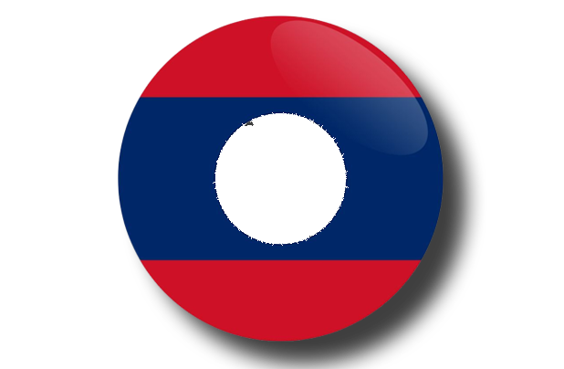

รูปแบบการปกครอง : ระบอบสังคมนิยม
วันชาติ : 2 ธันวาคม
ธงชาติลาว
แบบปัจจุบันเริ่มใช้มาตั้งแต่ 2 ธันวาคม ค.ศ. 1975 ซึ่งเป็นวันสถาปนาประเทศ
สาธารณรัฐประชาธิปไตยประชาชนลาว ธงนี้มีชื่อเรียกในภาษาลาวว่า ธงดวงเดือน
ได้รับการออกแบบขึ้นในช่วงสงครามโลกครั้งที่ 2 จากการร่วมออกแบบของสมาชิกขบวนการลาวอิสระ
โดยมีเจ้าเพชรราช รัตนวงศา, เจ้าสุภานุวงศ์และมหาสิลา วีระวงส์ นักปราชญ์ผู้ยิ่งใหญ่ของชาวลาวเป็นผู้กันช่วยกัน
ออกแบบ[1]ธงนี้เป็นหนึ่งในธงของประเทศที่ปกครองด้วยรัฐบาลคอมมิวนิสต์ ที่ไม่มีสัญลักษณ์รูปค้อนเคียว
ของขบวนการคอมมิวนิสต์สากล
ทั้งนี้ธงชาติดวงเดือนยังมีลักษณะตามที่กำหนดไว้ใน รัฐธรรมนูญแห่งสาธารณรัฐประชาธิปไตยประชาชนลาว
หมวดที่ 10 มาตราที่ 91 ดังนี้
"ธงชาติของสาธารณรัฐประชาธิปไตยประชาชนลาว เป็นธงพื้นสีคราม, แถบแดง, และวงเดือนสีขาว
อยู่กึ่งกลางของธงชาติ. ความกว้างของธงเท่ากับสองส่วนสามของความยาว,
ความกว้างขอบแถบสีแดงแต่ละข้างเท่ากับกึ่งหนึ่งของแถบสีคราม และวงเดือนสีขาวกว้างเท่ากับสี่ส่วนห้าของ
ความกว้างแถบสีครามตราสัญลักษณ์แผ่นดิน เป็นรูปวงกลม ด้านล่างมีรูปครึ่งกงจักรเป็นฟันเฟืองและโบว์อักษร
"สาธารณรัฐประชาธิปไตยประชาชนลาว" สองข้างล้อมด้วยรวงข้าวสุกเป็นรูปวงพระจันทร์และ
โบว์สีแดงเขียนอักษร "สันติภาพ เอกราช ประชาธิปไตย เอกภาพ วัฒนาถาวร” ตรงกลางระหว่างสองปลายรวง
ข้าวมีรูปพระธาตุหลวง อยู่กลางรูปวงกลมมีหนทาง ทุ่งนา ป่าไม้และเขื่อนไฟฟ้าน้ำตก